🏆 成果案例展示
精选项目落地与研究成果展示，体现技术可靠性与应用价值
成果案例 1
基于视觉的粗糙度在线智能检测系统
纳米级粗糙度原位在线智能检测，实现工业生产中表面质量的实时监控与精准测量

检测系统
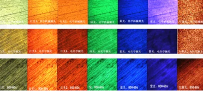
特征融合
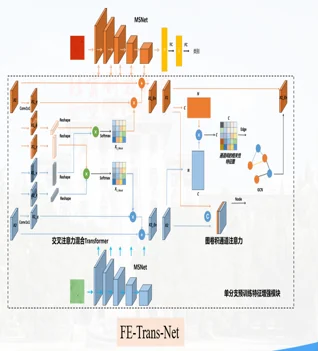
网络架构
系统优势
🔬
纳米级精度
测量精度达±5nm
⚡
在线实时检测
检测速度<1秒/样本
🧠
AI智能分析
准确率99%+
成果案例 2
基于视觉的缺陷智能检测
多通道、多尺度、多特征融合的AI模型，实现复杂工业场景下的高精度缺陷检测

AI模型
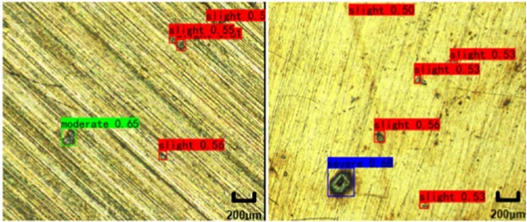
检测结果1
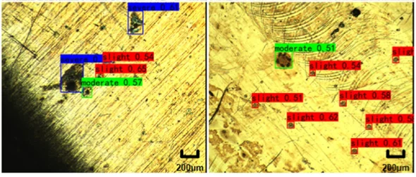
检测结果2
技术亮点
🔍
多通道融合
整合多种传感器数据，全面捕获缺陷特征
📏
多尺度检测
从微小划痕到大面积缺陷，全尺度覆盖
🧩
多特征融合
融合全局与局部特征，提升准确性
⚡
高效实时
检测速度50ms/张，准确率97%+
成果案例 3
基于机器视觉的分拣系统
基于深度学习的目标检测算法与混合特征提取网络（HFE-Net），实现高效精准的自动化分拣

分拣系统
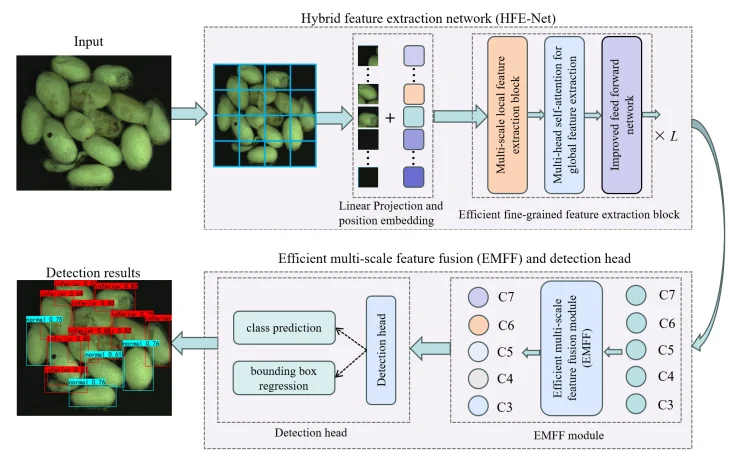
检测算法
应用优势
⚡
高速高效
30FPS+
🎯
精准识别
准确率98%+
🔧
灵活适配
多目标类型
💰
降本增效
ROI周期短
成果案例 4
具身智能 - 智能导航轮椅
融合视觉深度学习、智能导航、语音交互等前沿技术，为行动不便人士提供安全、智能、有温度的出行解决方案

📜 知识产权
已授权部分专利
持续创新，技术积累深厚，已获得多项国家发明专利授权
11+
已授权发明专利
- ✓ 图像分类与识别方法
- ✓ 目标检测与定位算法
- ✓ 表面粗糙度检测方法
- ✓ 材料属性预测方法
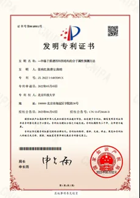
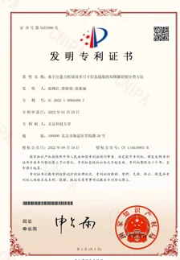
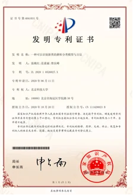
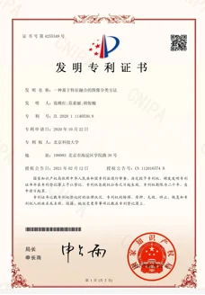
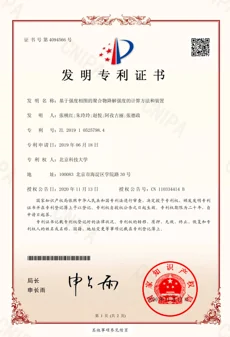
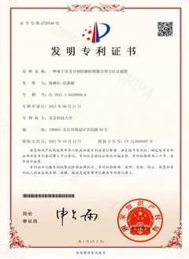